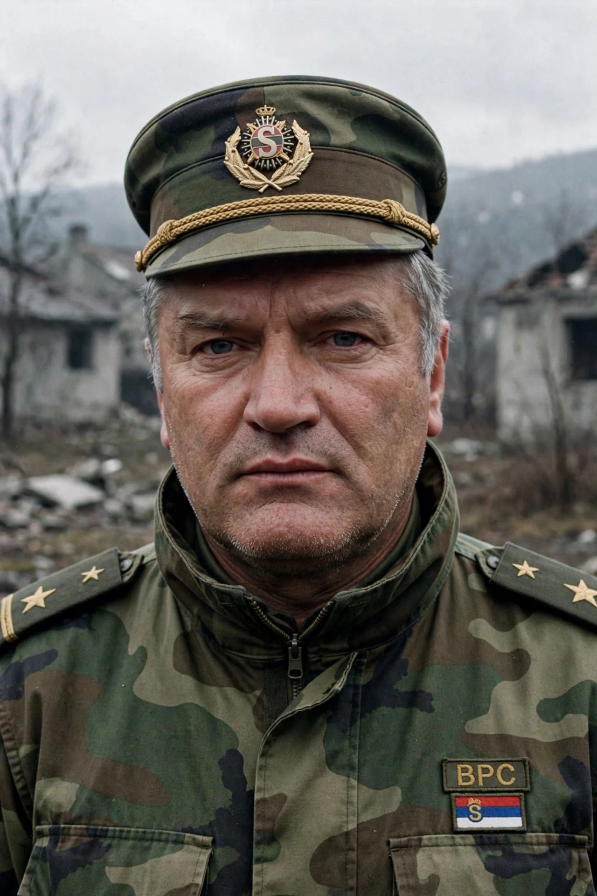

Ratko Mladić (born 12 March 1942) is a Bosnian Serb former military officer who led the Army of Republika Srpska (VRS) during the Bosnian War (1992–1995). In 2017 he was convicted by the ICTY of genocide, crimes against humanity and war crimes — including the Srebrenica massacre and the Siege of Sarajevo — and sentenced to life imprisonment, upheld on appeal in 2021.

A career officer in the Yugoslav People's Army, Mladić commanded forces in Croatia in 1991 and became VRS chief of staff in May 1992. Under his command, Bosnian Serb forces conducted ethnic cleansing, besieged Sarajevo for 1,425 days, and in July 1995 overran Srebrenica, murdering over 8,000 Bosniak men and boys — Europe's worst massacre since World War II.
Indicted in 1995, Mladić evaded arrest for 16 years before Serbian authorities captured him in Lazarevo in May 2011. The Hague tribunal (ICTY/MICT) convicted him on 10 of 11 counts. He remains imprisoned.